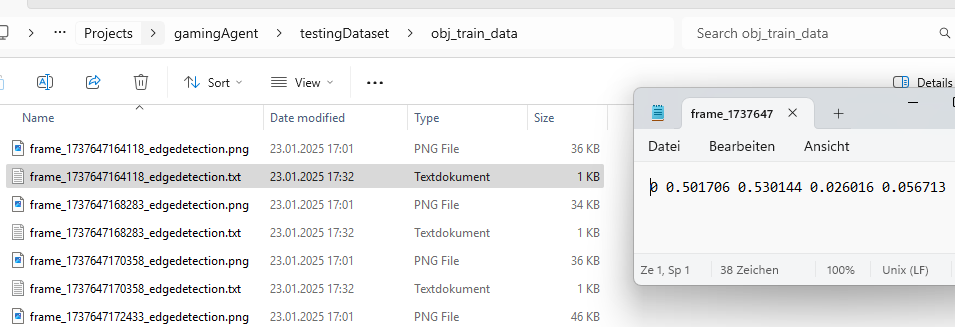
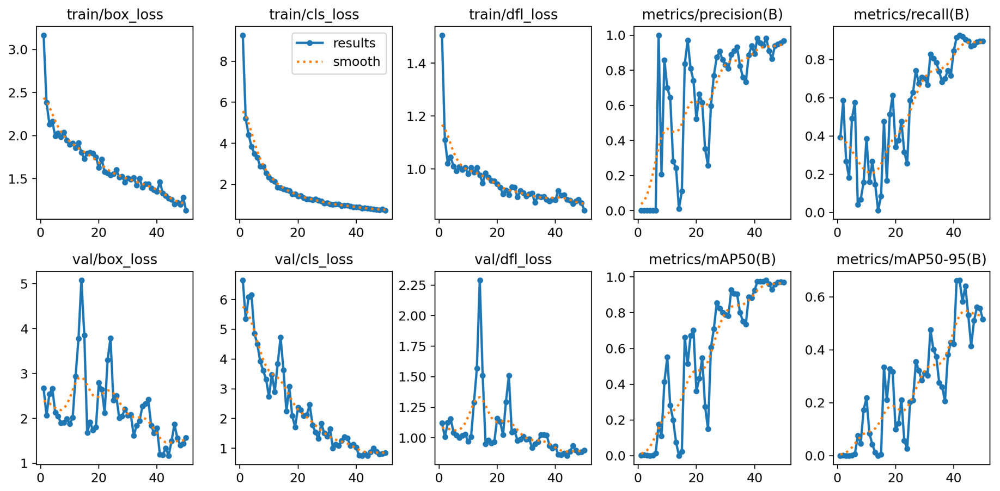

Project 7: AI-Powered Geometry Wars Agent
Object detection (Proof of Concept)
Background
This Proof of Concept (PoC) aims to leverage YOLOv8's real-time object detection capabilities to track the player in Geometry Wars 3. YOLOv8 is a state-of-the-art object detection model known for its speed and accuracy, making it suitable for real-time applications such as game analytics and AI-driven assistance tools. You can train the YOLOv8 model with your own data building a specific object detection solution. This capability will be leveraged for this project. The PoC aims at:
- Detecting the player within the game screen in real-time.
- Projecting the detections live in a separate screen (live feedback for evaluation).
Note: In a first step we avoid segementation and focus on object detection. Segementation will only be implemented once this PoC was successfull.
Step 1 - Gather Testing Data from Geometry Wars 3
To train the YOLOv8 model, a dataset of in-game screenshots will be collected. The screenshots are processed according to the inputs in PART 1 which include:
- Taking a screenshot every x seconds.
- Applying grayscaling and edge detection.
- Storing the final screenshot.
A total of 200 screenshots have been created for this PoC using the python script shown during PART 1.
Step 2 - Label Testdata and export in YOLO 1.1 format
Labeling has been simplified. The player object has been labeled using square boxes avoiding more complex structures. All labeling has been done with CVAT.ai. All 200 screenshots have been labeled and stored alongside the label coordinates in the format required by YOLOv8.
Step 3 - Train YOLOV8 to detect the player on the screen
The YOLOv8 object detection model can easily be trained by:
- Organizing the dataset by storing images (.png) and corresponding label (.txt) files under the obj_train_data folder, ensuring separate subfolders for training and validation data.
- Executing the command
yolo train model=yolov8n.pt data=data.yaml epochs=50 imgsz=640, where the number of epochs and image size are specified. These parameters may be adjusted in the future for the full-scale implementation beyond the proof of concept (PoC). - The model, along with training results, will be stored under the runs/detect/train directory, with the trained weights available inside the weights subfolder.
Step 4 - Validate the trained model
The evaulation shows that the model was very well trained and increasingly became better at predicting the player position correctly.
| Validation Metric | Explanation | Interpretation |
|---|---|---|
| train/box_loss | Measures how well the model predicts object bounding boxes during training. | A decreasing trend indicates improving localization accuracy. |
| train/cls_loss | Measures the model’s performance in correctly classifying detected objects during training. | A consistent downward trend suggests improved classification accuracy. |
| train/dfl_loss | Evaluates the quality of distribution predictions for object localization during training. | A steady decrease means better regression of box boundaries. |
| metrics/precision(B) | Indicates the proportion of detected objects that are actually correct (true positives). | High precision (>0.8) means fewer false positives. |
| metrics/recall(B) | Measures how many actual objects the model detects out of all available objects. | Increasing and high recall (>0.8) means the model is capturing most objects. |
| val/box_loss | Measures how well the model predicts object bounding boxes during validation. | A decreasing trend indicates improving localization accuracy. |
| val/cls_loss | Measures the model’s performance in correctly classifying detected objects during validation. | A consistent downward trend suggests improved classification accuracy. |
| val/dfl_loss | Evaluates the quality of distribution predictions for object localization during validation. | A steady decrease means better regression of box boundaries. |
| metrics/mAP50(B) | Evaluates the model's precision and recall at an IoU* threshold of 50%. | A higher value (>0.8) indicates strong detection performance at lenient criteria. |
| metrics/mAP50-95(B) | Measures precision and recall across a range of IoU* thresholds (from 50% to 95%). | A gradual increase shows improving model robustness across IoU levels. |
*IoU (Intersection over Union) is a metric used to evaluate the accuracy of an object detection model. It measures the overlap between the predicted bounding box and the ground truth (actual) bounding box.
Step 5 - Using the trained model
The results of the PoC were highly promising. The object detection model effectively and confidently identified the player throughout the gameplay, demonstrating its capability in real-time scenarios. However, to further enhance detection accuracy especially during more complex and crowded scenes, such as intense enemy encounters and gate explosions—additional training data will be beneficial. Building on the success of this PoC, the next phase will focus on developing a fully functional object detection system. This will involve expanding the model to recognize all key objects on screen and incorporating a more diverse dataset, covering a wide range of gameplay scenarios to improve robustness and overall performance.